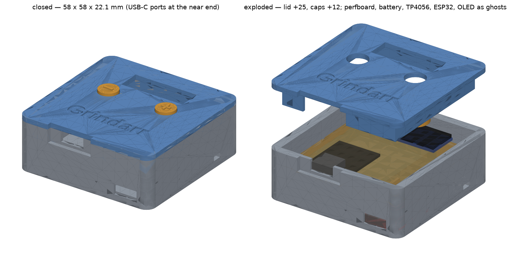
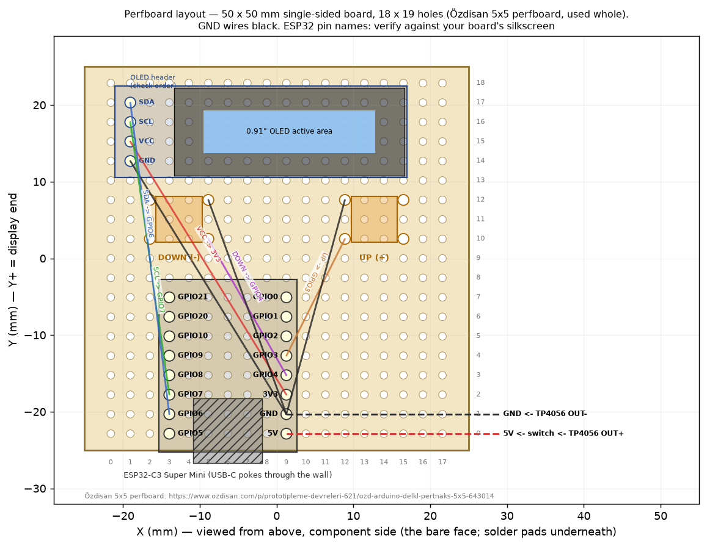
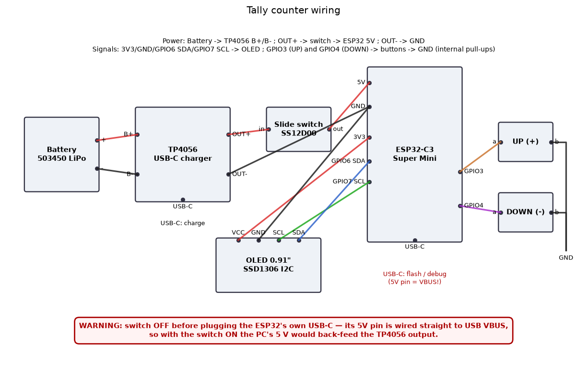

Case
58.0 × 57.6 × 22.1 mm closed · friction-fit lid · 4 parts, no supports
STL downloads
- tally-base.stl (31 kB)
- tally-lid.stl (118 kB)
- tally-cap-plus.stl (41 kB)
- tally-cap-minus.stl (39 kB)
Two buttons, a 0.91" OLED, an ESP32-C3 Super Mini and a 1000 mAh LiPo in a 58 × 58 × 22 mm 3D-printed case. Plain and ESPHome firmwares. Open source, generated from one script.

58.0 × 57.6 × 22.1 mm closed · friction-fit lid · 4 parts, no supports

50 × 50 mm single-sided perfboard (18 × 19 holes) · ESP32-C3 Super Mini · SSD1306 128 × 32 · TP4056 · 503450 LiPo

Same behaviour in both: click counts on release, hold both to reset, 60 s idle → deep sleep, count kept in flash